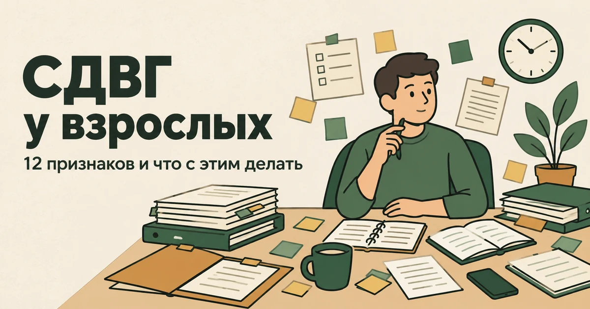
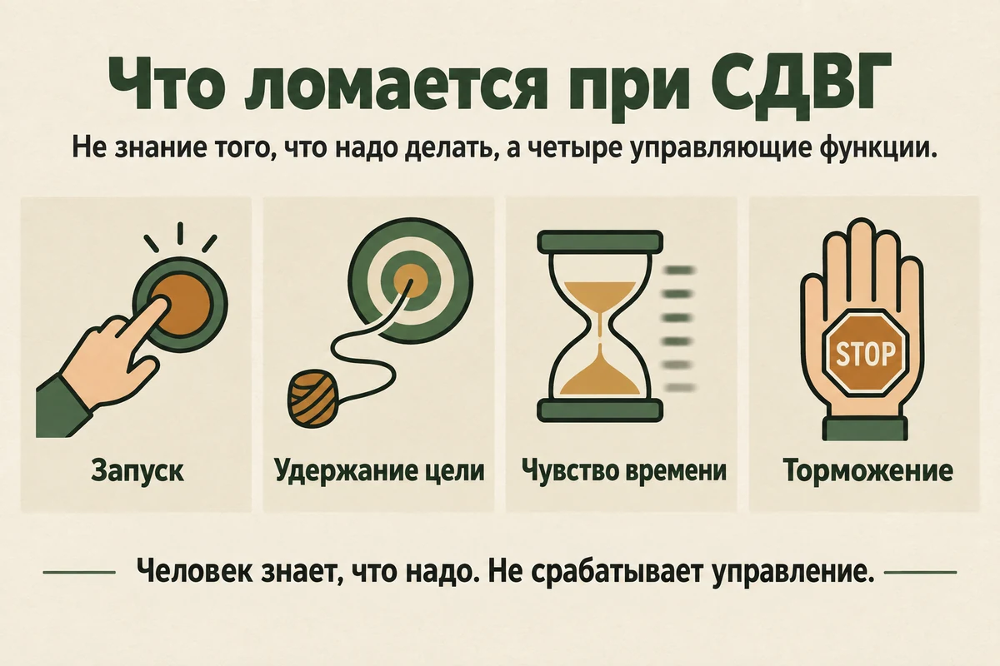
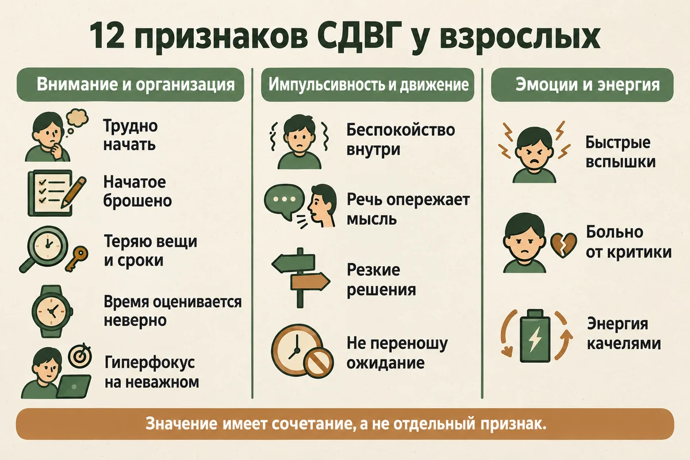
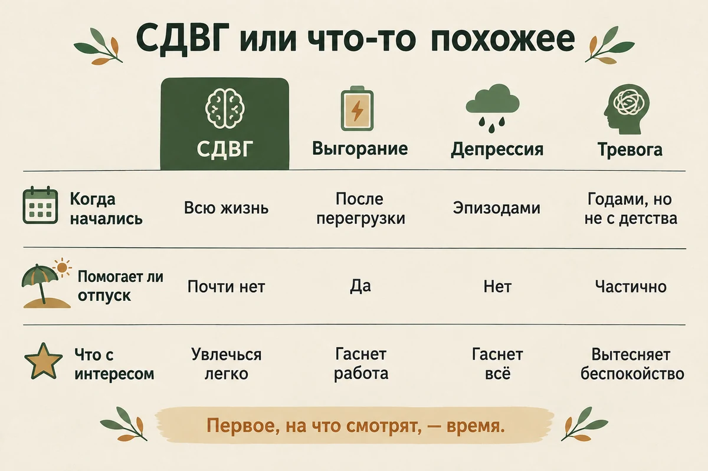
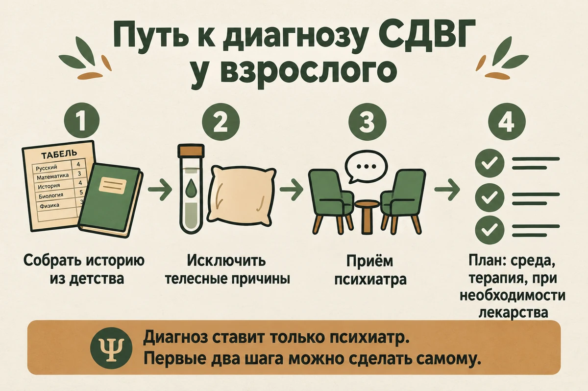
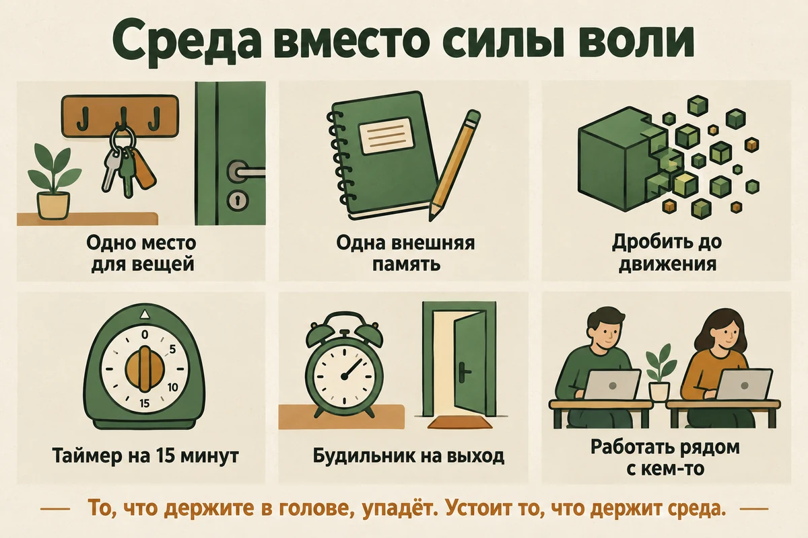

Главная → Блог → СДВГ у взрослых
СДВГ у взрослых: 12 признаков и что с этим делать
Обновлено: 09.09.2026 · 18 минут чтения

СДВГ у взрослых — это не «много энергии» и не лень, а сбой саморегуляции: мозгу трудно запустить дело, удержать намерение во времени и переключиться тогда, когда это нужно, а не когда захотелось. Поэтому человек может точно знать, что и как надо сделать, искренне хотеть это сделать — и не начать; а потом за ночь до срока сделать всё разом. Взрослый вариант выглядит не так, как детский: беготня по классу превращается во внутреннее «не могу сидеть на месте», и на первый план выходит не гиперактивность, а хаос в делах, забытые счета, брошенные на середине проекты и качели «то горю, то не могу встать». Ниже — двенадцать признаков, по которым это узнают, чем СДВГ отличается от выгорания, депрессии и обычного недосыпа, почему диагноз так часто ставят только к тридцати или сорока годам и как устроен путь к помощи именно в России, где половина мировых препаратов от СДВГ недоступна.
- Что такое СДВГ у взрослых
- 12 признаков: внимание, импульсивность, эмоции
- Три типа СДВГ
- Почему женщинам диагноз ставят позже
- Что похоже на СДВГ, но им не является
- СДВГ или биполярное расстройство
- Главный критерий: следы из детства
- Можно ли пройти тест на СДВГ
- Как ставят диагноз в России
- Что помогает: среда, терапия, лекарства
- 9 приёмов: среда вместо силы воли
- Что не работает
- Почему рядом с СДВГ так часто выгорание
- Когда точно нужен врач
- Частые вопросы
Что такое СДВГ у взрослых
СДВГ расшифровывается как синдром дефицита внимания и гиперактивности, и название сбивает с толку дважды. Невнимательность — действительно одна из двух главных групп симптомов, но дело обычно не в том, что внимания нет: трудно устойчиво направить его на нужное и удержать там, потому что оно уходит туда, где интересно или тревожно. И гиперактивности у взрослого чаще не видно вовсе: снаружи спокойный человек, внутри — двигатель, который не глушится.
NHS описывает это предельно просто: при СДВГ мозг работает иначе, чем у большинства людей, а трудности возникают в трёх областях — способность удерживать внимание, уровень активности и контроль импульсов. За всем этим стоят так называемые исполнительные функции: запустить действие, удержать цель в голове, распределить время, остановить себя. Именно они работают с перебоями, поэтому проблема не в том, что человек не знает, как надо, — он знает лучше многих, потому что думал об этом годами. Оговорка: «сбой саморегуляции» — удобная объяснительная модель, а не формальное определение; в критериях диагноз описывают через перечень конкретных проявлений, а не через неё.
Насколько это часто: метаанализ, опубликованный в British Journal of Psychiatry в 2009 году, дал оценку около 2,5% взрослых; более поздний глобальный обзор в Journal of Global Health (2021) оценил стойкий взрослый СДВГ примерно в 2,6%, а симптоматический — в 6,8%. То есть это не редкость и не мода: в компании из сорока человек, скорее всего, есть один такой сотрудник, и с большой вероятностью без диагноза.
С возрастом СДВГ не исчезает, но меняет форму. Двигательная гиперактивность действительно чаще стихает — а вот трудности с организацией, импульсивность в решениях и неспособность заставить себя начать никуда не деваются. Меняется и то, кто за это платит: в школе цену платили родители и учителя, а во взрослой жизни — сам человек, деньгами, карьерой и отношениями.

12 признаков: внимание, импульсивность, эмоции
Разбирать удобнее по трём группам. Сразу оговорка: это не диагностический чек-лист. Официальные критерии сформулированы иначе, а часть перечисленного ниже — не критерий, а частая жалоба людей с СДВГ. Ни один признак сам по себе ничего не значит: терять ключи может кто угодно. Значение имеет устойчивое сочетание, которое мешает не в одной сфере жизни, а как минимум в двух — например, и на работе, и дома.
Внимание и организация.
- Начать — самое трудное. Не «не хочу», а буквально не получается запустить действие, хотя дело простое и важное. Со стороны это выглядит как лень, но изнутри переживается как отсутствие ключа зажигания.
- Десятки начатых и брошенных дел. Курсы, проекты, книги, ремонт в одной комнате. Интерес выгорает ровно в тот момент, когда заканчивается новизна и начинается рутина.
- Потери и забывчивость в быту. Ключи, карта, документы, забытые счета и неоплаченные штрафы, пропущенная запись к врачу, непрочитанные важные письма.
- Время течёт иначе. Дело на полчаса оценивается в десять минут, а «выйду через пять минут» превращается в сорок. Хронические опоздания при этом не про неуважение: человек искренне собирался успеть.
- Гиперфокус. Обратная сторона: пять часов подряд на чём-то захватывающем, без еды и с пропущенными звонками. Именно из-за гиперфокуса многие уверены, что у них «не может быть СДВГ» — но это не опровержение, а тот же самый сбой управления вниманием, просто с другого конца.
Импульсивность и движение.
- Внутреннее беспокойство вместо беготни. Трудно высидеть совещание или сеанс в кино, нога дёргается сама, руки что-то крутят, а на пляже в отпуске становится физически некомфортно.
- Речь опережает решение. Перебиваете, договариваете за собеседника, отвечаете раньше, чем вопрос закончен, потом жалеете о сказанном.
- Импульсивные решения. Внезапные покупки, увольнение в один день, резкие сообщения ночью, спонтанные обещания, которые потом тяжело выполнять.
- Непереносимость скуки и ожидания. Очередь, пробка, пауза в разговоре — рука сама тянется к телефону, причём это ощущается не как привычка, а как необходимость.
Эмоции и энергия.
- Быстрые вспышки. Раздражение вспыхивает мгновенно и так же быстро проходит, оставляя недоумение окружающих и стыд у самого человека.
- Обострённая чувствительность к критике и отказу. Нейтральное замечание переживается несоразмерно тяжело. Это не диагностический критерий, но при СДВГ такое описывают очень часто.
- Энергия качелями. Период высокой вовлечённости, когда сделано всё и сразу, сменяется истощением, когда не получается ничего. Ровного темпа не бывает почти никогда. Важная оговорка: если речь о нескольких днях подряд необычно приподнятого или взвинченного настроения, когда резко падает потребность во сне, — это уже не про СДВГ и требует отдельной оценки.

Отдельно — про порог. По критериям DSM-5 подросткам старше 16 лет и взрослым достаточно пяти устойчивых признаков в группе, тогда как детям нужно шесть — так формулирует это и Национальный институт психического здоровья США. В МКБ-11 критерии устроены иначе, и жёсткого подсчёта «пять из девяти» там нет. Порог у взрослых ниже как раз потому, что с возрастом часть проявлений маскируется опытом и привычками — человек научился обходить свои слабые места, и снаружи всё выглядит терпимо, хотя обходные пути забирают массу сил.
Три типа СДВГ
Формально выделяют три варианта, и от того, какой у человека, сильно зависит, заметят его вообще или нет.
- Преимущественно невнимательный. Гиперактивности почти нет, есть рассеянность, потери, трудности с организацией и запуском дел. Самый «тихий» и потому чаще всего пропущенный тип — раньше его называли СДВ, без буквы «г».
- Преимущественно гиперактивно-импульсивный. На первом плане беспокойство, торопливость, импульсивные решения и речь. Заметен окружающим, но обычно трактуется как черта характера: «взрывной», «шило в одном месте».
- Смешанный. Есть и то, и другое, и, по данным NHS, именно этот вариант встречается у большинства людей с СДВГ.
Тип — не ярлык на всю жизнь: соотношение признаков меняется с возрастом, и человек, которого в школе не могли усадить за парту, к сорока годам может выглядеть просто рассеянным.
Почему женщинам диагноз ставят позже
Это одна из самых устойчивых закономерностей в теме. NHS прямо отмечает: СДВГ у женщин распознают реже, и вероятная причина в том, что у них чаще преобладают именно симптомы невнимательности, которые заметить труднее, чем гиперактивность.
Механика простая. Девочка, которая тихо смотрит в окно и «витает в облаках», не мешает уроку — значит, проблемы нет. Мальчик, который встаёт из-за парты, мешает, и его ведут к врачу. Дальше подключается компенсация: списки, будильники, перфекционизм, работа по ночам, тревога как способ ничего не упустить. Такая система держится годами и рушится ровно тогда, когда нагрузка вырастает: институт, первый ребёнок, руководящая должность, переезд. Человек приходит к специалисту с выгоранием или депрессией, и уже за ними обнаруживается СДВГ, который был всегда.
Побочный эффект этой истории — многолетнее ощущение, что вы обманщик, который держится на честном слове и вот-вот будет разоблачён. Про то, откуда берётся это чувство и что с ним делать, у нас есть отдельный разбор синдрома самозванца; при позднем диагнозе он читается совсем иначе.
Что похоже на СДВГ, но им не является
Рассеянность, нехватка сил и неспособность сосредоточиться — крайне неспецифичные жалобы: их даёт добрый десяток разных состояний. Прежде чем примерять на себя диагноз, полезно посмотреть на четыре самых частых альтернативы.
| Признак | СДВГ | Выгорание | Депрессия | Тревога |
|---|---|---|---|---|
| Когда началось | Всю жизнь, следы с детства | После долгой перегрузки, есть точка старта | Эпизодами, недели и месяцы | Может тянуться годами, но не с детсадовских лет |
| Что с интересом | Увлечься легко, переключиться трудно | Гаснет то, что связано с работой | Гаснет всё, включая любимое | Интерес есть, его вытесняет беспокойство |
| Помогает ли отпуск | Почти нет | Да, заметно | Обычно нет | Частично, потом возвращается |
| Что со сном | Трудно уснуть — «не выключается голова» | Сон не восстанавливает | Ранние пробуждения или пересып | Долгое засыпание и ночные пробуждения |
| Как выглядит внимание | Рассеяно и при этом способно к гиперфокусу | Тупое, вязкое, всё через силу | Замедленное, с трудом удерживается | Сужено на источник тревоги |
| Что с самооценкой | Годами «мог бы, но не собрался» | Циничное отношение к работе | Ощущение никчёмности и вины | Страх не справиться |
Пользоваться этой таблицей стоит как набором ориентиров, а не как правилом. Каждая строка описывает то, что бывает чаще, а не то, что бывает всегда: депрессия бывает затяжной и стёртой, тревога — тянуться с детства, а сочетания «СДВГ плюс депрессия» или «СДВГ плюс выгорание» встречаются очень часто, и тогда ни одна колонка не подойдёт целиком.
Проверить эти версии частично можно и самостоятельно, свободными шкалами: PHQ-9 — про депрессию, GAD-7 — про тревогу, CBI — про выгорание. Ни одна из них не подтверждает и не исключает СДВГ, но результат стоит принести врачу: он экономит время на приёме и сразу показывает, что ещё есть в картине.
Есть и вторая группа причин, чисто телесных: хронический недосып и бессонница, ночное апноэ, анемия и дефицит железа или B12, нарушения щитовидной железы, побочные эффекты лекарств, злоупотребление алкоголем. Отдельно — апатия после длительного стресса: она даёт очень похожую картину «ничего не могу начать». Врач на приёме обязательно оценивает сон, принимаемые лекарства, употребление веществ и соматические заболевания, которые могут имитировать или усиливать симптомы; какие именно анализы нужны, зависит от вашей истории, а не от общего списка из интернета. Но наладить сон стоит попробовать и до похода к специалисту: это единственное из перечисленного, что можно проверить самому и бесплатно.

СДВГ или биполярное расстройство
Эту пару путают чаще всего, и различить их важнее, чем всё остальное в предыдущем разделе: помощь при этих состояниях разная, а ошибка дорого стоит.
При СДВГ колебания энергии — фон всей жизни. Они привязаны к задачам, интересу и накопленной усталости, меняются в течение одного дня и тянутся с детства. При биполярном расстройстве речь о другом: об очерченных эпизодах, которые длятся днями и неделями и меняют человека целиком. Настроение становится необычно приподнятым или взвинченным, резко падает потребность во сне — спит три часа и чувствует себя выспавшимся, — ускоряется речь, появляются нехарактерная самоуверенность и рискованные поступки, о которых потом жалеют.
Ориентир простой: если вопрос звучит как «почему я опять не могу начать», это разговор про СДВГ; если как «почему меня несколько дней подряд было не узнать» — это в первую очередь к психиатру и именно с этой версией, а не с планировщиком задач. Разбираться самостоятельно здесь не стоит ещё и потому, что часть препаратов, применяемых при СДВГ, при нераспознанном биполярном расстройстве способна навредить.
Главный критерий: следы из детства
Если запомнить из статьи одну вещь, пусть это будет она. По действующим диагностическим критериям несколько признаков СДВГ должны были проявляться до 12 лет. Именно это отделяет СДВГ от всего, что появилось позже — от выгорания, депрессии, последствий тяжёлого периода.
Проверить это можно и до приёма, причём проверка обычно оказывается неожиданно убедительной:
- школьные табели и характеристики — классическая формулировка «способный, но невнимательный»;
- рассказы родителей: терял ли вещи, доделывал ли начатое, сколько раз переспрашивал задание;
- собственные воспоминания: сколько кружков было брошено, как выглядели уроки, что писали в дневнике;
- старые тетради — почерк, недописанные строчки, пропущенные задания;
- рассказы тех, кто знал вас подростком, а не только сегодняшних коллег.
Важная оговорка: отсутствие диагноза в детстве не значит ровным счётом ничего. В российских школах девяностых и нулевых СДВГ почти не диагностировали, а невнимательный тип не замечали вовсе. Поэтому первый в жизни диагноз в тридцать пять лет — не «мода на СДВГ», а обычная траектория: расстройство было, распознали его поздно.
А если трудности начались только после тридцати? Тогда СДВГ — маловероятное объяснение, и смотреть надо в другую сторону: сон, стресс, тревога, депрессия, щитовидная железа, алкоголь, принимаемые лекарства. Само по себе это не значит, что «ничего нет», — значит только, что причину надо искать не здесь. Есть и промежуточный вариант: трудности были всегда, но стали заметны, когда выросла нагрузка. Тогда изменилась не голова, а требования к ней, и это по-прежнему разговор про СДВГ.
Можно ли пройти тест на СДВГ
Короткий ответ: онлайн-тест не ставит диагноз и не может его поставить в принципе. Максимум, что он делает, — показывает, стоит ли записываться к врачу.
Основной короткий скрининг на взрослый СДВГ называется ASRS: он разработан при участии ВОЗ, состоит из шести вопросов и показывает не диагноз, а то, насколько оправданно идти к специалисту. Правообладатель разрешает использовать шкалу свободно при условии, что вопросы и подсчёт воспроизводятся без изменений, — поэтому она у нас есть: пройти тест на СДВГ по шкале ASRS, две минуты, без регистрации. Порог там один и задан авторами; что он значит и, главное, чего не значит, разобрано на самой странице теста. Полезно заодно отделить от СДВГ соседние состояния свободными шкалами: PHQ-9, GAD-7 и CBI.
И ещё одно, про соцсети. Короткие ролики «5 признаков СДВГ» построены на признаках, которые есть у всех: терял ключи, отвлекался, откладывал. Узнать себя в них может почти каждый — и это не про вашу невнимательность, а про то, как устроен формат. Ориентируйтесь не на узнавание, а на два вопроса: тянется ли это с детства и во сколько вам обходится.
Как ставят диагноз в России
Диагноз СДВГ ставит психиатр или психиатр-психотерапевт. Не невролог, не нейропсихолог и не психолог: последние могут провести обследование, поддержать и помочь подготовиться, но право поставить диагноз и назначить лечение есть только у врача-психиатра.
Как выглядит приём. По описанию NHS, специалист расспрашивает историю симптомов — особенно про то, начались ли они в детстве и как влияли на школу, — и разбирает несколько областей жизни: работу и учёбу, семью и друзей, медицинскую историю. Часто просят разрешения поговорить с близким человеком, который знает вас давно: со стороны видно то, что сам человек уже не замечает. Одного разговора обычно мало, приёмов бывает несколько.
Есть и специфическая российская сложность, о которой честнее сказать прямо. В МКБ-10, по которой в стране пока ставят диагнозы, СДВГ описан в разделе расстройств детского и подросткового возраста, поэтому часть врачей взрослым его не ставит в принципе — не из-за вашего состояния, а из-за классификации. В МКБ-11 это уже исправлено: возрастного ограничения там нет. Практический вывод: если специалист отказал без объяснений, имеет смысл найти другого, который работает со взрослым СДВГ, — и это не «хождение за нужным диагнозом», а нормальная навигация в системе, где тема только приживается.
Про страх «поставят на учёт»: обращение к психиатру само по себе не влечёт никаких ограничений, и путаницу вокруг диспансерного наблюдения мы подробно разобрали в справочнике бесплатной помощи — там же есть, куда обратиться, если платный приём не по карману.

Что помогает: среда, терапия, лекарства
Здесь важно сразу разделить: цель не в том, чтобы стать другим человеком, а в том, чтобы перестать платить за особенность работы мозга карьерой, деньгами и отношениями. План подбирают индивидуально, и складывается он из трёх частей — изменений в среде и режиме, лекарств по показаниям и психологической работы.
Начинают со среды. Британское руководство NICE (NG87) советует взрослым сперва внедрить изменения в среде и оценить результат; если после этого симптомы всё ещё существенно мешают хотя бы в одной сфере жизни, встаёт вопрос о лекарствах. Это не отговорка «попробуйте ежедневник»: речь о системной перестройке, которой посвящён следующий раздел.
Лекарства. Вопреки распространённому у нас представлению, у взрослых это не крайняя мера: доказательная база здесь сильная, и NICE предлагает медикаментозное лечение как основной следующий шаг после изменений в среде. Психологическую помощь то же руководство рекомендует тем, кто осознанно отказался от лекарств, плохо их переносит или не получил достаточного эффекта, — а также в дополнение к лекарствам, если трудности сохраняются. То есть привычная последовательность «сначала психотерапия, лекарства в последнюю очередь» — это не то, что там написано.
Психологическая работа. Минимум, описанный в руководстве: структурированная поддерживающая психологическая помощь, сфокусированная именно на СДВГ, плюс регулярное наблюдение; она может включать элементы или полный курс когнитивно-поведенческой терапии. Ключевое здесь — «сфокусированная на СДВГ»: работа идёт не только с переживаниями, но и с конкретными навыками — планированием, запуском задач, отвлечениями, реакцией на собственные срывы. Вторая её половина не менее важна: разбирать то, что накопилось за годы, — тревогу, самооценку, отношение к себе. Среди подходящих вариантов NHS называет также практики осознанности, и они особенно полезны тем, у кого на первом плане импульсивность и вспышки.
И вот здесь российская специфика меняет всё. Первой линией у взрослых NICE называет лиздексамфетамин или метилфенидат. Метилфенидат в России внесён в Список I — перечень веществ, оборот которых запрещён, — и как обычный рецептурный препарат от СДВГ не применяется; лиздексамфетамин в стране тоже не зарегистрирован. Поэтому переводные статьи с советом «попросите врача выписать риталин» к российской практике неприменимы, а попытки достать такие препараты в обход закона — отдельная и очень плохая идея. Из специфических препаратов у нас зарегистрирован атомоксетин: он не стимулятор и не обладает потенциалом злоупотребления; в схеме NICE это вариант для тех, кто не переносит стимуляторы или не ответил на них, а в российских условиях он оказывается основным. Действует не сразу, эффект накапливается неделями.
| Вариант помощи | Что с ним в России |
|---|---|
| Изменения в среде и режиме | Доступны всем, с них и начинают |
| КПТ и работа с навыками | Доступна; специалистов именно по взрослому СДВГ мало |
| Атомоксетин | Зарегистрирован, рецептурный, назначает психиатр |
| Метилфенидат | Список I, как препарат от СДВГ не применяется |
| Лиздексамфетамин | Не зарегистрирован |
| Ноотропы, «витамины для памяти» | Продаются свободно, доказательств эффективности при СДВГ нет |
Никакие препараты при СДВГ не подбираются самостоятельно и не покупаются «попробовать». Назначить, подобрать дозу и вести наблюдение может только врач: у части людей лекарства усиливают тревогу или нарушают сон, и без сопровождения это опасно. Всё написанное выше — объяснение того, как устроен выбор, а не рекомендация конкретного лечения.
9 приёмов: среда вместо силы воли
Общий принцип приёмов, которые обычно помогают, один: не пытаться усилить самоконтроль, а вынести его наружу. Всё, что вы держите в голове усилием, рано или поздно упадёт; всё, что держит среда, устоит и в плохую неделю. Сразу оговорка: это практические стратегии, а не лечение. Они способны заметно облегчить жизнь, но не заменяют разговор со специалистом, если трудности серьёзные.
- Одно место для всего, что теряется. Коробка или крючок у двери: ключи, карта, наушники кладутся туда всегда, без исключений. Правило работает именно потому, что не требует решения.
- Внешняя память вместо своей. Всё, что появилось в голове, немедленно уходит в одно место — приложение или блокнот, но обязательно одно. Два списка означают ноль списков.
- Дробить до первого физического действия. Не «сделать отчёт», а «открыть файл отчёта». Мозгу с СДВГ трудно запустить абстрактную задачу и заметно легче — конкретное движение.
- Таймер на пятнадцать минут и разрешение бросить. Договоритесь с собой не о результате, а о времени: пятнадцать минут, после которых можно честно всё оставить. Чаще всего не оставляете — трудность была именно в старте.
- Будильники на выход, а не на начало. Ставьте сигнал не на «пора собираться», а на «пора выйти за дверь», и ещё один за десять минут до него. Это прямая компенсация того, что время оценивается неверно.
- Работать рядом с кем-то. Присутствие другого человека — в кабинете, в кафе или в видеозвонке — заметно облегчает запуск. Приём не про контроль: чужой рабочий ритм просто задаёт ваш.
- Убирать соблазн из комнаты, а не из руки. Телефон в другой комнате работает, телефон экраном вниз — почти нет. Решения, принимаемые в момент искушения, при СДВГ проигрывают всегда, поэтому решайте заранее.
- Сон, движение, еда — не общие советы. Недосып даёт симптомы, неотличимые от СДВГ, и усиливает настоящие. NHS ставит регулярный сон, физическую активность и нормальное питание в один ряд с остальной помощью, а не в раздел «дополнительно».
- Договориться о среде на работе. Письменные инструкции вдобавок к устным, тихое место, задачи, разбитые на части, — NHS перечисляет ровно это как разумные приспособления. Просить о них не стыдно: вы просите не о поблажке, а о формате, в котором работаете лучше.
И два ограничения, о которых стоит знать заранее. Первое: любая система при СДВГ должна пережить плохую неделю — если она разваливается от одного пропуска, она не подходит, какой бы красивой ни была. Второе: с задачами, которые откладываются годами, одних приёмов мало; там обычно замешан страх, и об этом подробнее в разборе прокрастинации.

Разложить конкретный завал бывает проще вслух: что именно вы откладываете, где застревает запуск и какой первый шаг достаточно мелкий, чтобы его удалось сделать сегодня. Это можно сделать прямо сейчас, анонимно и без регистрации — и вернуться завтра, если снова застрянете.
Разобрать, с чего начатьЧто не работает
- Ноотропы, глицин, «витамины для памяти». Убедительных доказательств эффективности при СДВГ нет, в клинических руководствах их нет тоже. Основной вред не в самих препаратах, а в потерянных месяцах.
- Кофе и энергетики вместо лечения. На пару часов концентрация действительно растёт, а расплата приходит вечером: разрушенный сон даёт почти те же симптомы, что и СДВГ. Получается круг, который сам себя кормит.
- Классический тайм-менеджмент. «Составьте план на день» проваливается не там, где кажется: планы люди с СДВГ составляют прекрасно и даже с удовольствием. Ломается запуск, и планировщик тут не помогает.
- Красивые сложные системы. Чем изящнее конструкция из папок, тегов и цветов, тем быстрее она будет брошена. Работает только то, что переживает пропуск.
- «Просто соберись» и «начни с самого важного». Совет требует ровно того навыка, которого не хватает. К тому же самое важное дело обычно и самое большое, то есть самое трудное для запуска.
- Алкоголь как способ выключить голову. Работает вечером, ухудшает всё остальное и повышает риск зависимости, которая при СДВГ и без того выше средней — механику отката подробно разбирали в статье про алкоголь и тревогу.
- Самодиагностика по роликам. Формат построен на признаках, которые есть у каждого, и потому даёт ложное узнавание почти всем.
Почему рядом с СДВГ так часто выгорание
Взрослый с нераспознанным СДВГ приходит к специалисту обычно не со словами «я невнимательный». Он приходит уставшим, подавленным и уверенным, что с ним что-то не так по существу. NHS отмечает, что у людей с СДВГ чаще встречаются депрессия, тревожные расстройства и зависимости, — и это не совпадение, а закономерное следствие.
Складывается оно из трёх вещей. Во-первых, годы обратной связи «ты можешь, но не стараешься»: тридцать лет такой фразы делают с самооценкой ровно то, что можно ожидать. Во-вторых, компенсация двойным усилием: чтобы выдавать средний результат, человек тратит вдвое больше сил, чем коллеги, и держит это годами — прямая дорога к выгоранию. В-третьих, тревога как рабочий инструмент: многие держатся именно на страхе забыть и подвести, и тревога становится встроенной частью системы, без которой всё разваливается.
Отсюда практический вывод, который часто оказывается самым ценным в позднем диагнозе: перестроить среду мало, приходится ещё разбирать то, что накопилось за годы. Сюда же относится и умение отказывать и обозначать границы — при СДВГ импульсивное «да, конечно, сделаю» раздаётся особенно легко, а расплачивается за него потом тот же человек.
Когда точно нужен врач
Поводы записаться, не откладывая и не пытаясь разобраться самому:
- из-за невнимательности и сорванных сроков уже страдают работа, учёба или деньги;
- близкие устали от невыполненных обещаний, и это разрушает отношения;
- вы годами компенсируете двойным усилием и чувствуете, что запас кончился;
- к трудностям с вниманием добавились подавленность, потеря интереса, ощущение бессмысленности;
- вы стали регулярно пить или употреблять что-то, чтобы успокоиться или собраться;
- импульсивность приводит к опасным решениям — за рулём, в деньгах, в отношениях;
- появляются мысли навредить себе.
Последний пункт — повод обратиться немедленно, а не записываться на приём через месяц. Куда идти бесплатно, собрано в справочнике помощи.
Частые вопросы
Как понять, что у меня СДВГ, а не просто лень?
По одному признаку СДВГ от «лени» не отличить, да и «лень» — не диагноз, а описание со стороны. Смотреть надо на всю картину: как давно существуют трудности, в скольких сферах жизни они проявляются, насколько устойчивы, были ли похожие проблемы в детстве и во сколько они обходятся. Показательно вот что: при СДВГ можно очень хотеть сделать важное дело, точно понимать, как именно его делать, — и всё равно раз за разом не мочь его запустить, а параллельно семь часов подряд заниматься чем-то неважным, но захватывающим. Если из-за этого уже пострадали работа, деньги, учёба или отношения, разбираться стоит со специалистом, а не с силой воли.
Бывает ли СДВГ у взрослых, если в детстве его не было?
СДВГ не начинается во взрослом возрасте: по действующим критериям несколько его признаков должны были проявляться до 12 лет. Но «не было диагноза» и «не было СДВГ» — совсем разные вещи. Тем, кто рос в девяностые и нулевые, такой диагноз почти не ставили, а невнимательный тип без беготни не замечали вовсе: ребёнка называли рассеянным, мечтательным или способным, но ленивым. Поэтому первый диагноз в тридцать или сорок лет — обычная история, и означает он не то, что расстройство появилось, а то, что его наконец распознали.
Какой врач ставит диагноз СДВГ у взрослых в России?
Психиатр или психиатр-психотерапевт — только у них есть право поставить этот диагноз и назначить лечение. Невролог, нейропсихолог и психолог могут помочь с обследованием и поддержкой, но диагноз не ставят. Отдельная сложность в том, что в МКБ-10, по которой в России пока работают, СДВГ описан в разделе расстройств детского возраста, поэтому часть врачей взрослым его не ставит в принципе. Это вопрос классификации, а не вашего состояния: если один специалист отказал без объяснения причин, имеет смысл обратиться к другому, работающему со взрослым СДВГ.
Можно ли пройти тест на СДВГ онлайн?
Пройти можно, но важно понимать предел: ни один онлайн-тест не ставит диагноз и не может его поставить в принципе — он в лучшем случае показывает, насколько оправданно идти к врачу. Основной короткий скрининг называется ASRS, разработан при участии ВОЗ и состоит из шести вопросов; у нас он есть в разделе тестов, бесплатно и без регистрации. Порог там один: четыре отметки и больше означают, что обследование оправдано. Полезно заодно проверить, не объясняются ли ваши симптомы депрессией, тревогой или выгоранием — для этого есть свободные шкалы PHQ-9, GAD-7 и CBI.
Лечится ли СДВГ у взрослых?
Полностью убрать особенность работы мозга нельзя, а вот снизить её цену — вполне реально, и результат обычно заметен. Работают три вещи вместе: перестройка среды под себя, структурированная психологическая работа, сфокусированная именно на СДВГ, и по показаниям лекарства, которые подбирает психиатр. Британское руководство NICE советует начинать с изменений в среде и переходить к медикаментам тогда, когда симптомы всё ещё существенно мешают хотя бы в одной сфере жизни. Разумная цель — не стать другим человеком, а перестать терять работу, деньги и отношения из-за забытых дел.
Почему СДВГ у женщин находят позже?
Потому что у женщин чаще преобладает невнимательный тип, а его симптомы, как отмечает NHS, распознать труднее, чем гиперактивность. Девочку, которая тихо смотрит в окно, в школе не считают проблемой — в отличие от мальчика, который не может усидеть за партой. Дальше подключается компенсация: списки, перфекционизм, работа по ночам, тревога как способ ничего не забыть. Такая маскировка держится до тех пор, пока не вырастет нагрузка — обычно это институт, первый ребёнок или руководящая должность, — и тогда человек приходит к врачу уже с выгоранием или депрессией, за которыми СДВГ и обнаруживается.
Как отличить СДВГ от выгорания?
Главное различие — во времени. У выгорания есть точка начала: до тяжёлого периода человек справлялся, после него перестал, и за несколько недель отпуска становится ощутимо легче. СДВГ идёт фоном всю жизнь, отпуск его не лечит, а в школьных воспоминаниях находятся те же самые сюжеты. Второе различие — в интересе: при выгорании гаснет всё подряд, включая то, что раньше нравилось, а при СДВГ увлечься по-прежнему легко, трудно именно переключиться на нужное. При этом одно не исключает другого: люди с СДВГ выгорают чаще среднего, потому что годами компенсируют двойным усилием.
Можно ли иметь СДВГ и депрессию одновременно?
Да, и это скорее правило, чем исключение: NHS отмечает, что у людей с СДВГ чаще встречаются депрессия, тревожные расстройства и зависимости. Причина отчасти в самом СДВГ — годы срывов, обратной связи «мог бы, но не собрался» и компенсации двойным усилием сами по себе являются фактором риска. Практический вывод такой: найденная депрессия не отменяет СДВГ, а найденный СДВГ не значит, что подавленность пройдёт сама, как только наладится планирование. Обычно работать приходится с обоими состояниями, а очерёдность определяет врач — иногда сначала снимают депрессию, потому что на её фоне остальное просто не работает.
Можно ли лечить СДВГ у взрослых только психотерапией?
Можно, и это полноценный вариант, а не второй сорт. Руководство NICE прямо предусматривает психологическую помощь для тех, кто осознанно отказался от лекарств, плохо их переносит или не получил достаточного эффекта. В российских условиях этот путь к тому же оказывается основным для многих: препараты первой линии из зарубежных руководств здесь недоступны. Важно только, чтобы работа была структурированной и сфокусированной на СДВГ — с планированием, запуском задач и отвлечениями, а не сводилась к разговорам о прошлом.
Помогают ли ноотропы и глицин при СДВГ?
Убедительных доказательств эффективности ноотропов, глицина и «витаминов для памяти» при СДВГ нет, и ни в одном современном клиническом руководстве они не рекомендованы. Вреда от них обычно немного, но есть цена другого рода: человек месяцами пьёт что-то безобидное вместо того, чтобы дойти до специалиста и перестроить среду. Отдельно стоит сказать про кофе и энергетики: концентрацию они действительно ненадолго повышают, но разрушают сон, а недосып сам по себе даёт почти те же симптомы, что и СДВГ, — получается замкнутый круг.
Статья носит просветительский характер и не заменяет консультацию специалиста. Если вам прямо сейчас невыносимо тяжело или появляются мысли о том, чтобы причинить себе вред, позвоните: 112 — при угрозе жизни; +7 (495) 989-50-50 — круглосуточная линия ЦЭПП МЧС России; 8-800-2000-122 (с мобильного — 124) — детям, подросткам и их родителям; 051 (с мобильного 8 (495) 051) — для Москвы. Куда ещё можно обратиться бесплатно — в справочнике помощи.
Читать также
- Тест на СДВГ у взрослых (ASRS) — 6 вопросов скрининга ВОЗ, результат сразу и без регистрации.
- Прокрастинация: почему мы откладываем и как перестать — про то, что при СДВГ мешает больше всего.
- Эмоциональное выгорание: признаки и что делать — состояние, которое чаще всего путают с СДВГ.
- Тест на выгорание CBI — результат сразу и без регистрации.
- Апатия: что делать, когда ничего не хочется — если пропал не фокус, а желание в принципе.
- Как повысить самооценку: 8 шагов — про цену многолетнего «мог бы, но не собрался».
- Синдром самозванца — частый спутник позднего диагноза.
- Бессонница при тревоге — недосып даёт симптомы, неотличимые от СДВГ.
- Когнитивно-поведенческая терапия — основа психологической работы при СДВГ у взрослых.
Материал подготовлен командой AI Therapist и основан на действующих клинических руководствах и доказательных подходах к работе с СДВГ у взрослых — прежде всего на когнитивно-поведенческой терапии и структурированной работе с навыками планирования и запуска дел. Сведения о признаках, диагностике и вариантах помощи приводятся по NHS, NIMH и руководству NICE NG87, диагностические пороги — по критериям DSM-5, оценки распространённости — по метаанализам. Описание СДВГ через «управляющие функции» — общепринятая объяснительная модель, а не формулировка из классификаций. Статья носит просветительский характер, не является медицинской рекомендацией и не заменяет консультацию врача: диагноз СДВГ ставит только психиатр, и лекарства назначает тоже только он.
Источники: NHS — ADHD in adults, NICE NG87 — Attention deficit hyperactivity disorder: diagnosis and management, Simon V. et al. «Prevalence and correlates of adult attention-deficit hyperactivity disorder: meta-analysis», British Journal of Psychiatry, 2009, Song P. et al. «The prevalence of adult attention-deficit hyperactivity disorder: a global systematic review and meta-analysis», Journal of Global Health, 2021. NIMH — ADHD: What You Need to Know (диагностические критерии у взрослых, начало симптомов до 12 лет), МКБ-11, раздел 6A05, Soler-Gutiérrez A.-M. et al. «Evidence of emotion dysregulation as a core symptom of adult ADHD: a systematic review», PLOS ONE, 2023. Источники проверены 09.09.2026.
Кто отвечает за содержание сайта и по каким правилам мы готовим материалы — на странице о проекте.